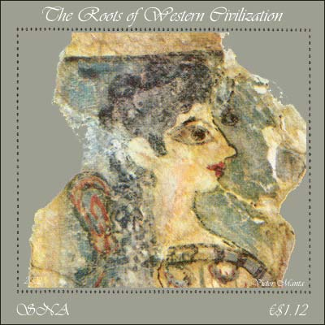
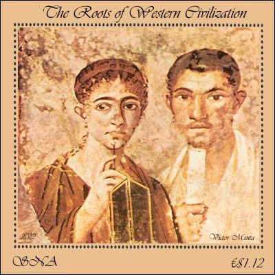
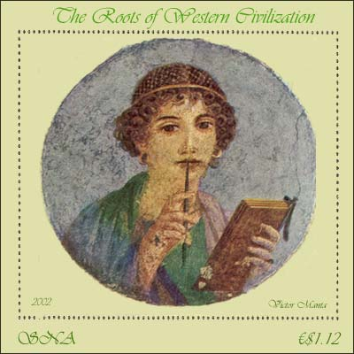
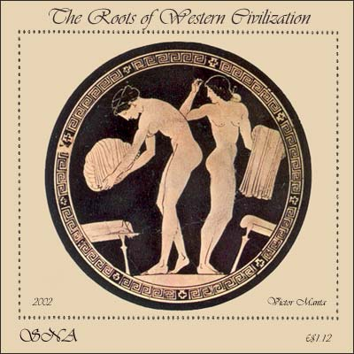

|
Created:
10/19/02. Revised:
01/07/06. |
|
|
The new
SNA issue, shown below, was triggered by some discussion on the newsgroup
rec.collecting.stamp.discuss concerning the image of women in art. This issue tries to give an illustrated answer to the discussed points,
by using wonderful works of art, that weren't displayed so far on postal
stamps.  The head of a woman, that was named "La petite Parisienne" is a part of a wall paintings found in the New Palace in Knossos, Old Minoic Era I (1550-1450 BC). It is conserved by the Archeological Museum in Heraklion, Crete. The influence of Egyptian art can be recognized in the representation of the eye. Even after about 3500 years the image of this elegant lady from the dark past deeply moves many of us still today.  Double portrait of the lawyers Terentius Nero and of his wife. Found in a house in Pompeii. It is Roman work of the "Second Style" (short before 79 AD), conserved in Naples, at the National Museum. Both characters are dressed in tunics and coats. The woman with the big brown eyes shows us her double writing board (Diptychon). This work reminds a family photograph from the beginning of the 20th century.  Portrait of a young girl with a writing board. From Pompeii, a Roman work of art of the old "Third-Fourth Style". Naples, National Museum. This portrait of of a lady who holds a Tetraptychon in her left hand, the stylus on her lip, and with dreamful eyes has fascinated the onlookers since it was rediscovered in the ruins of Pompeii (city that disappeared from the face of the earth on August 26, 79 AD).  Preparation for the Bath, from the inner part of a bowl. painted by the artist Douris. Red figured style, about 470-460 BC. From the collection of the Metropolitan Museum of Art, New York. Both young ladies are putting their dresses on footstools. A work of art in an impeccable classical style. (Text and paintings after the German version of the work "20.000 years of world painting", publisher Harry N. Abrahams, Inc., NY. ISBN 3-88199-265-0. A present from me to my daughter, in 1989, when she became 9 years old :). From the RCSD newsgroup, 10/20/2002: "Very nice. In fact nicer than many real stamps that are being regurgitated by postal administrations these days. Dave (Boyd)." |
|
Created:
10/19/02. Revised:
01/07/06. |
|